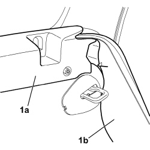
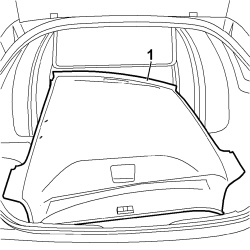

7040H10 ROOF PANEL LINING - R.R.
- Path
- Procedures > 70 FITTINGS > 7040 BODY INTERIOR FITTINGS AND TRIM > 7040H ROOF PANEL AND PILLARS LINING > 7040H10 ROOF PANEL LINING - R.R.
- Kind
- repair procedure (removal / refitting; the operation number is the code)
- Applies to
- all engines; all production periods
- Interactive page
- https://sloeber94.github.io/elrnDB-fCrm/en/#/194001063
Applies to: all engines; all production periods
 Removing
Removing
 Refitting
Refitting- Open the door and the tailgate.
- Turn the ignition key to the OFF position.
- Disconnect the negative battery terminal.
Description | Connector | |
|---|---|---|
BATTERY |
- Partly prise the front door compartment seal out on both sides.
(Both)
Op. 7040H30 FRONT PILLAR TRIM (ONE), LEFT OR RIGHT - R.R.
Op. 7040E50 FRONT MODULAR COURTESY LIGHT UNIT - R+R
(Both)
Op. 7065C33 SUN BLIND WITH COURTESY MIRROR AND COURTESY LIGHT ONE LH OR RH R R
Op. 7040H33 GLASSES HOLDER (1) LH OR RH, ON ROOF TRIM - R R
(All)
Op. 7065C30 GRAB HANDLE (ONE) LEFT, RIGHT OR CENTRE PASSENGER COMPARTMENT INTERIOR - R.R
Op. 7040B26 LOAD PLATFORM COVER BLIND - R+R
1. Move the upper covers (1a) for the load carrying compartment and the side panels (1b) for the rear seats aside.

Applies to: all engines; all production periods
Both
Op. 7040L44 REAR DOOR RUNNING BOARD (ONE), LEFT OR RIGHT - R.R.
Both
Op. 7040H36 CENTRE PILLAR LOWER ELEMENT (ONE), LEFT OR RIGHT - R.R
Op. 7040H38 CENTRE PILLAR UPPER ELEMENT (ONE), LEFT OR RIGHT - R.R
- Partly prise the rear door compartment seal out on both sides.
Both
Op. 7040H42 REAR PILLAR TRIM (ONE), LEFT OR RIGHT- R.R
Both
Op. 7040E14 L/H OR R/H SIDE COURTESY LIGHT (ONE) - R+R
- Partly prise out the tailgate compartment seal.
Both
Op. 7040H50 REAR PANEL (ONE), LEFT OR RIGHT - R.R
1. Carefully remove the roof trim by passing through the tailgate.

Applies to: all engines; all production periods
Refitting
Removing- Check that the roof lining is not damaged and position it in the vehicle.
Both
Op. 7040H50 REAR PANEL (ONE), LEFT OR RIGHT - R.R
- Fit the tailgate housing seal in position.
Both
Op. 7040E14 L/H OR R/H SIDE COURTESY LIGHT (ONE) - R+R
Both
Op. 7040H42 REAR PILLAR TRIM (ONE), LEFT OR RIGHT- R.R
Both
Op. 7040H38 CENTRE PILLAR UPPER ELEMENT (ONE), LEFT OR RIGHT - R.R
Both
Op. 7040H36 CENTRE PILLAR LOWER ELEMENT (ONE), LEFT OR RIGHT - R.R
(Both)
Op. 7040L44 REAR DOOR RUNNING BOARD (ONE), LEFT OR RIGHT - R.R.
- Reposition the side panels for the rear seats and the upper covers for the load carrying compartment.
- Reposition the rear seat backrest.
- Fit the rear side door compartment seal out on both sides.
Op. 7040B26 LOAD PLATFORM COVER BLIND - R+R
Op. 7065C30 GRAB HANDLE (ONE) LEFT, RIGHT OR CENTRE PASSENGER COMPARTMENT INTERIOR - R.R
Op. 7040H33 GLASSES HOLDER (1) LH OR RH, ON ROOF TRIM - R R
Op. 7065C33 SUN BLIND WITH COURTESY MIRROR AND COURTESY LIGHT ONE LH OR RH R R
Op. 7040E50 FRONT MODULAR COURTESY LIGHT UNIT - R+R
Op. 7040H30 FRONT PILLAR TRIM (ONE), LEFT OR RIGHT - R.R.
- Fit the front side door compartment seal on both sides.
- Connect the negative battery terminal.
Description | Connector | |
|---|---|---|
BATTERY |
Topics linked from this page (13)
- 7040B26 LOAD PLATFORM COVER BLIND - R+R
- 7040E14 L/H OR R/H SIDE COURTESY LIGHT (ONE) - R+R
- 7040E50 FRONT MODULAR COURTESY LIGHT UNIT - R+R
- 7040H30 FRONT PILLAR TRIM (ONE), LEFT OR RIGHT - R.R.
- 7040H33 GLASSES HOLDER (1) LH OR RH, ON ROOF TRIM - R R
- 7040H36 CENTRE PILLAR LOWER ELEMENT (ONE), LEFT OR RIGHT - R.R
- 7040H38 CENTRE PILLAR UPPER ELEMENT (ONE), LEFT OR RIGHT - R.R
- 7040H42 REAR PILLAR TRIM (ONE), LEFT OR RIGHT- R.R
- 7040H50 REAR PANEL (ONE), LEFT OR RIGHT - R.R
- 7040L44 REAR DOOR RUNNING BOARD (ONE), LEFT OR RIGHT - R.R.
- 7065C30 GRAB HANDLE (ONE) LEFT, RIGHT OR CENTRE PASSENGER COMPARTMENT INTERIOR - R.R
- 7065C33 SUN BLIND WITH COURTESY MIRROR AND COURTESY LIGHT ONE LH OR RH R R
- A001 BATTERY